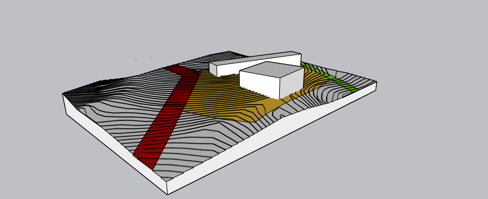
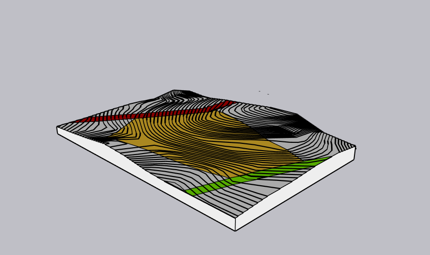
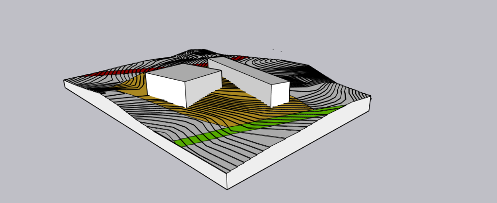
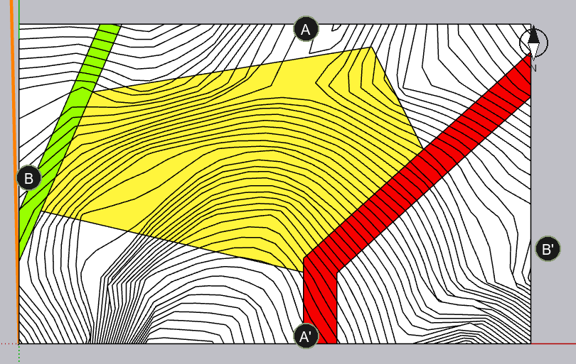
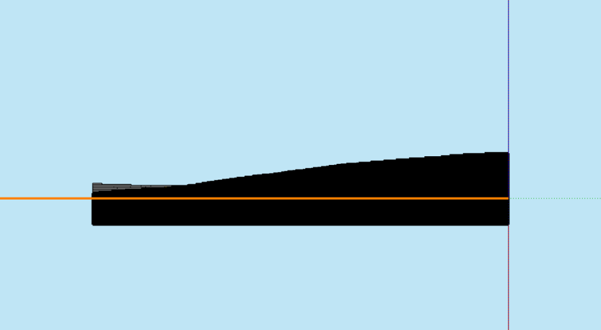
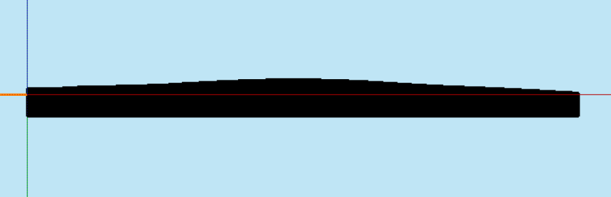

Modo Demo: Datos confidenciales bloqueados.

Presentamos más que un terreno: un modelo de negocio inmobiliario validado. Este dossier contiene el estudio de cabida y viabilidad arquitectónica para un desarrollo armónico de 326 unidades, ofreciendo al inversionista total certeza técnica y normativa.
En PARDE Arquitectos no solo calculamos metros cuadrados; visualizamos el potencial de vida. Este terreno en Calle Los Coigües 150 ofrece la topografía y conectividad perfectas para un desarrollo residencial de impacto.
Nuestra auditoría técnica confirma la viabilidad normativa, liberando a los inversionistas del riesgo inicial. La invitación es simple: adquiera este activo estratégico y confíenos el desarrollo integral de la arquitectura e ingeniería.
El polígono rojo marca el lienzo donde levantaremos este Masterplan.
La auditoría 3D integra el terreno con su entorno urbano, demostrando gráficamente los accesos principales y la masa edificable máxima proyectada según la normativa vigente.

Reconocimiento del terreno y su conexión estratégica con las arterias principales: consolidación hacia Calle Los Coigües y la nueva Av. Las Palmas.

Inserción de la masa crítica edificable (volumetría) dentro de los límites del terreno, aprovechando al máximo la conectividad del paño.
El terreno no es un problema de pendiente, es una oportunidad arquitectónica. El análisis de curvas de nivel revela una cresta central que permite escalonar los edificios, garantizando vistas panorámicas y ocultando estacionamientos sin excavación profunda.



Baja altura, patios privados y máximo aprovechamiento de vistas.
Infraestructura de salud con enfoque en bienestar y entorno natural.
Comercio de escala vecinal integrando la topografía en terrazas.
Grandes infraestructuras aprovechando el 60% de área libre.
Fraccionamiento del macrolote para venta por partes, reduciendo el ticket de entrada para múltiples inversionistas o inmobiliarias pequeñas.
¿Por qué se vende bajo la tasación?
El propietario necesita liquidez inmediata para resolver una situación societaria. El terreno está libre de hipotecas, gravámenes e interdicciones, con carpeta de documentos completa y vigente. No existe ningún problema legal ni técnico que justifique el precio — el descuento es una decisión de velocidad de cierre, no de valor. Quien actúe rápido captura el diferencial.
Al comprar el suelo con más de un 50% de descuento sobre la tasación, la utilidad proyectada del proyecto de 326 deptos supera holgadamente las 111.290 UF (16% original).
Auditoría validada según el Certificado de Informaciones Previas (CIP) Rol 866-175 vigente.
La banca exige que el costo del terreno no supere el 7–10% del costo total del proyecto. Si ese umbral se cruza, ningún banco financia el desarrollo y el terreno se vuelve prácticamente invendible para desarrolladores.
Un terreno cuyo costo supera el 15% del proyecto hace inviable el financiamiento bancario. A $800 millones + IVA, este terreno se sitúa en el 6% del proyecto — muy por debajo del umbral crítico —, lo que garantiza que cualquier inmobiliaria o constructora pueda apalancarse sin restricciones con la banca.
Visión experta de PARDE Arquitectos para una toma de decisiones objetiva y segura.
Condominio escalonado de densidad media. Aprovechar la loma de 15m para aterrazar edificios de hasta 4 pisos o casas adosadas. Esto maximiza las vistas al valle y reduce drásticamente el costo de cimentación y muros de contención.
El negocio cierra. A un precio de venta de MM + IVA, el suelo pesa solo un 6% del costo total de un proyecto de 326 unidades. Esto garantiza que cualquier banco financiará la obra sin restricciones técnicas.
La norma CIP EX-H2 permite densidades mayores. Sin embargo, intentar construir torres de gran altura requeriría una excavación titánica en la cresta del cerro, encareciendo la obra a niveles absurdos que matarían la rentabilidad del desarrollador.
La pendiente no es un problema, es el mayor activo del terreno. Al usar la topografía para ocultar cajas de estacionamientos subterráneos y escalonar los volúmenes, la arquitectura se paga sola y eleva el estándar del producto final.
Calle Los Coigües 150 (Parcela 102), Los Almendros, Peñablanca, Villa Alemana.
La viabilidad está demostrada y la cabida de 326 departamentos asegura la rentabilidad. Invierta en el terreno Peñablanca y asóciese con PARDE Arquitectos para el desarrollo del Anteproyecto y Especialidades.